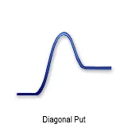
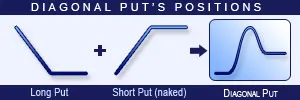
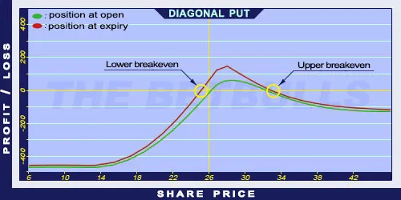

Description and use

Diagonal Put is like Diagonal Call but the Call options are replaced by Put options. Therefore, the investments may look similar. The only question is whether trading Calls or Puts result bigger return. The purchased Long Put should be long term and OTM, and the Short Put should be short term and ITM. If the share price increases above the Short Put’s strike price, then the option expires worthless and the Long Put’s value will decrease also. The direction of the market is increasing. It is a safe investment if the Long Put’s expiration is far (back) and the Short Put’s expiration is close (front), usually monthly.
- Type: Bullish
- Transaction type: Debit
- Maximum profit: Limited
- Maximum loss: Limited
- Strategy: Income strategy
Opening the Position

Diagonal Put Option Positions
- Buy a long term, lower strike Put option.
- Sell a short term, higher strike Put option.
Steps
Entry:
- Make sure the trend is ascending or stagnating at a certain level.
Exit:
- If the share price is lower and outside the higher Stop Loss, the position should be reversed.
- If the position stays between the two strike prices, it will be exercised.
Basic Characteristics
- Maximum loss: Higher strike price - Long Put’s maximum value at first expiry + net debit.
- Maximum profit: At expiry of Short Put, it is the function of the Long Put’s value.
- Time decay: Time decay has a mixed effect on the value.
- Lower breakeven point: At expiry of Short Put, it is the function of the Long Put’s value.
- Upper breakeven point: At expiry of Short Put, it is the function of the Long Put’s value.
Advantages and Disadvantages
Advantages:
- Income on a monthly basis.
- The potential return is larger than for a Covered Call or a Naked Call strategy.
- The investor can profit from share prices moving within given limits as well.
Disadvantages:
- In case of increasing share prices, it has an upper limit.
- In case of large increase in share prices, it can generate losses.
Closing the Position
Details on how to close the position by buying back the Short Put option and selling the Long Put option, along with mitigation of losses.
Example

Diagonal Put strategy example
- ABCD is traded for $26.00 on 11.05.2017. The historical volatility is 40%. The investor buys a Long Put option which has a strike price of $25.00, expires in January 2006. and costs $4.00 (premium). Then, sells a Short Put option which has a strike price of $27.50, expires in June 2017. and costs $2.50 (premium).
- Price of the underlying (share price): S= $26.00
- Premium (Short Put): SP= $2.50
- Premium (Long Put): LP= $4.00
- Strike price (Short Put): KS= $27.50
- Strike price (Long Put): KL= $25.00
- Net Debit: ND
- Maximum loss: R
- Maximum profit: Pr
- Breakeven point: BEP
Cannot be calculated numerically!